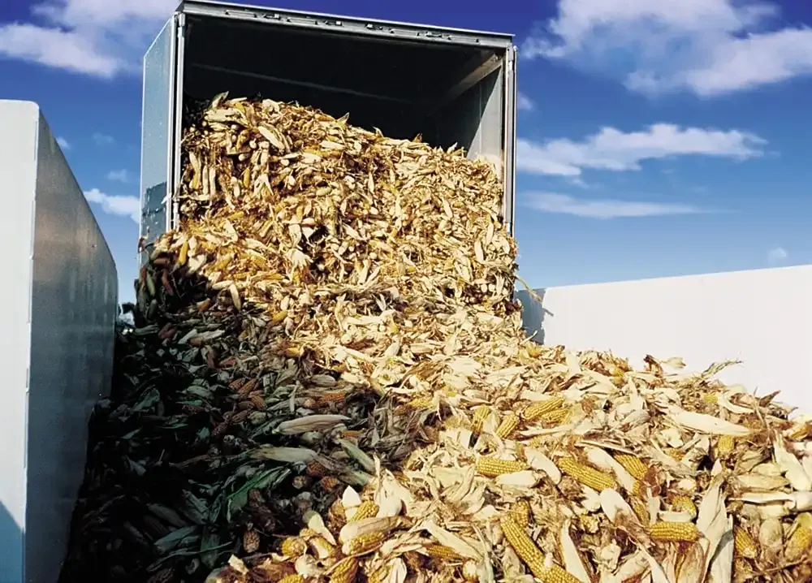
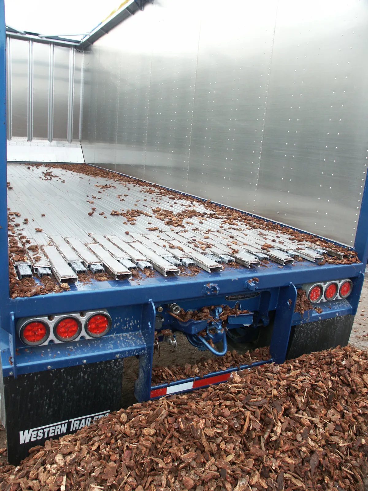
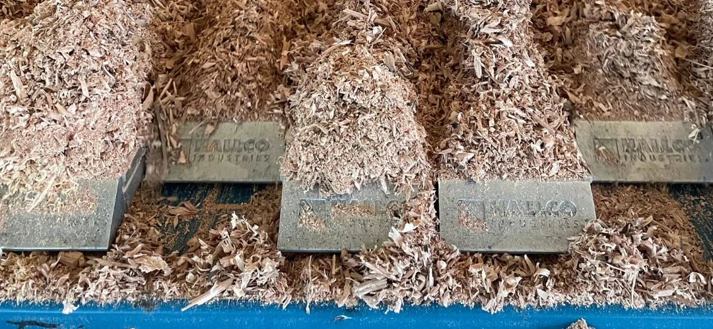
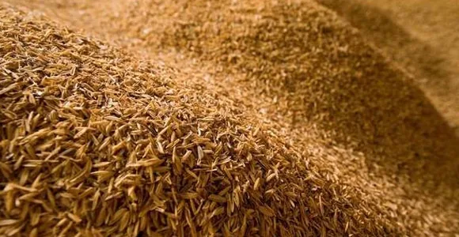
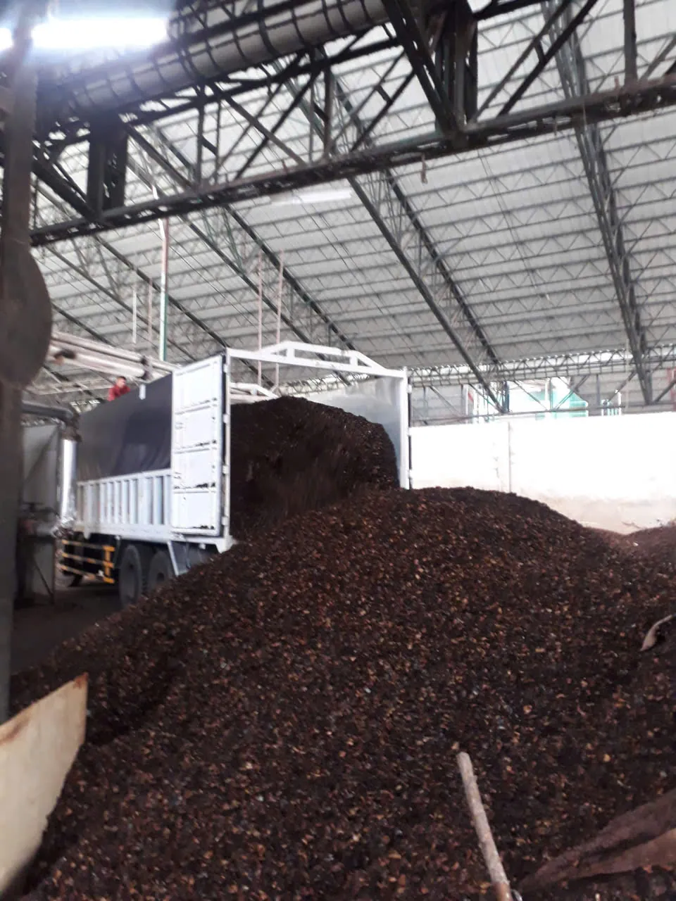
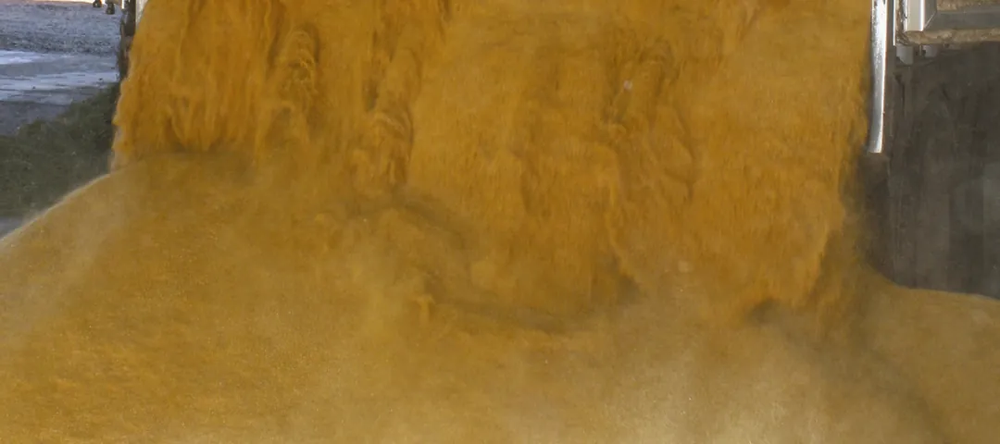
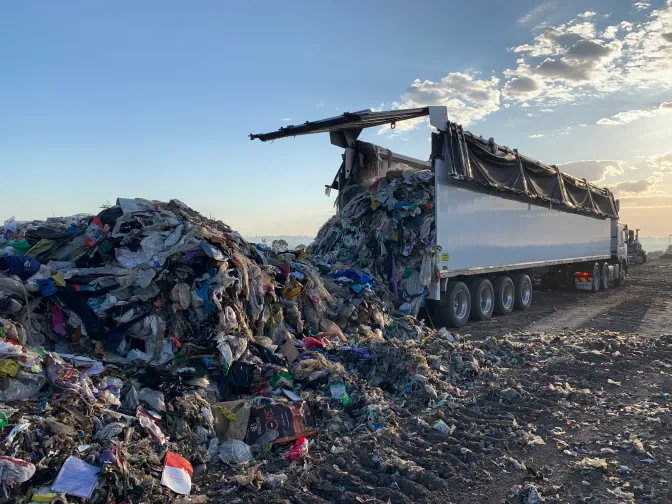
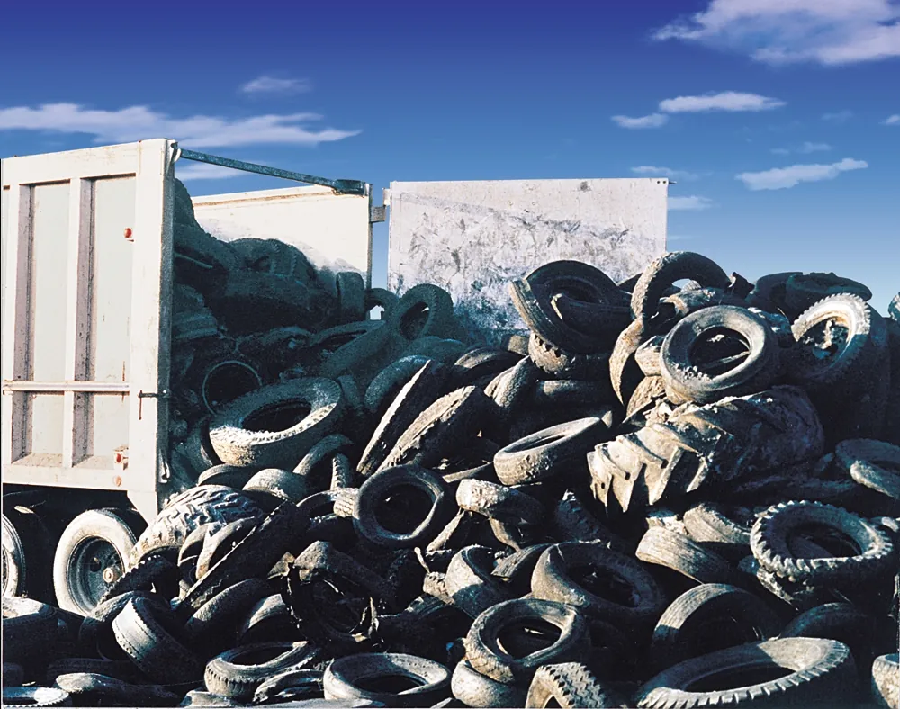
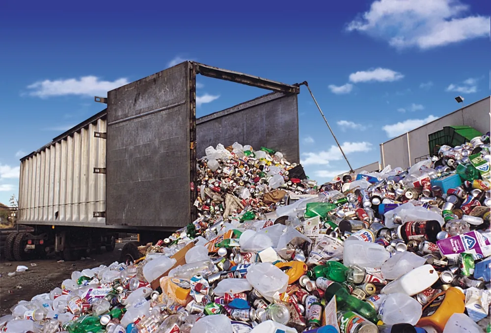

Sàn tự đổ cho từng loại hàng rời
Theo HALLCO, sàn LIVE FLOOR® chuyển được mọi loại hàng rời có đủ lực ép xuống sàn và ma sát. Điều cần chọn là profile thanh sàn và bộ dẫn động hợp với loại hàng đó.


Dăm gỗ
Dăm gỗ đi đường dài từ bãi băm ra cảng hoặc tới nhà máy viên nén, giấy và lò hơi. Hàng nhẹ, cồng kềnh nên xe thường chở đầy thùng cao, và xả bằng nâng ben dưới mái kho hay cạnh dây điện là việc khó.
Với sàn tự đổ, xe lùi vào bãi, mở cửa sau và xả ngay tại chỗ, kể cả trong nhà kho. Bạt quét đáy giúp gom nốt phần dăm vụn cuối thùng.
- Cấu hình HALLCO gợi ý
- i-4000 hoặc i-6000 với thanh Standard, chọn bộ dẫn động theo tải trọng.

Mùn cưa
Mùn cưa mịn, nhẹ và dễ bay. Khi xả bằng nâng ben, bụi tung lên theo cả khối hàng đổ xuống. Sàn tự đổ đẩy hàng ra từ từ ở độ cao mặt sàn, nên ít bụi hơn và dễ kiểm soát đống hàng.
Hạt mịn có thể lọt qua khe giữa các thanh. Như Tín sẽ cân nhắc profile thanh sàn và bạt quét đáy cho loại hàng này khi khảo sát.
- Cấu hình HALLCO gợi ý
- Nhóm gỗ: i-4000 hoặc i-6000 với thanh Standard. Như Tín xác nhận profile sau khi xem mẫu hàng.

Trấu
Trấu là nhiên liệu lò hơi phổ biến ở đồng bằng sông Cửu Long và nhiều vùng lúa. Hàng rất nhẹ nên mỗi chuyến cần thùng lớn, và xe thường phải xả ở kho có mái của nhà máy.
Thùng nằm ngang khi xả giúp xe làm việc được trong kho thấp. Vì trấu nhẹ, lực ép xuống sàn nhỏ, nên chọn profile thanh sàn là việc cần làm kỹ.
- Cấu hình gợi ý
- Gần với nhóm nông sản (i-4000 với AG Topseal). Như Tín xác nhận sau khi xem mẫu hàng và xe.

Vỏ hạt điều
Đây là mặt hàng chính của Như Tín: bã vỏ hạt điều sau ép dầu, giao bằng đội xe chuyên dụng tới lò hơi công nghiệp.
Kinh nghiệm chở và xả chính loại hàng này là lý do Như Tín tư vấn cấu hình cho khách cùng ngành một cách thực tế, thay vì chỉ dựa vào bảng tra.
- Cấu hình gợi ý
- HALLCO không có cấu hình công bố riêng cho vỏ hạt điều. Như Tín tư vấn dựa trên kinh nghiệm vận hành thực tế.
Nông sản: ngô, sắn
Ngô hạt, ngô cây ủ chua, sắn lát và nhiều nông sản khác được chở theo mùa vụ, khối lượng lớn trong thời gian ngắn. Xe xả nhanh và tự xả được ở nhiều điểm nhận là lợi thế lớn trong cao điểm.
Với hàng hạt, điều quan trọng là không để hàng lọt khe và hao hụt dọc đường.
- Cấu hình HALLCO gợi ý
- i-4000 với thanh AG Topseal để hạn chế hao hụt.

Thức ăn chăn nuôi và nguyên liệu
Bã ngũ cốc khô, cám, khô dầu và các nguyên liệu dạng rời cho nhà máy thức ăn chăn nuôi. Ảnh của HALLCO bên cạnh là bã ngũ cốc khô (DDG) đang được xả từ rơ-moóc.
Hàng dạng bột và hạt nhỏ cần thanh sàn kín khe, và thùng cần xả sạch để không lẫn giữa các chuyến.
- Cấu hình HALLCO gợi ý
- Nhóm hàng hạt: i-4000 với AG Topseal. Có thể thêm bạt quét đáy để xả sạch.

Rác thải sinh hoạt
Rác sinh hoạt ở Việt Nam thường ướt và có nhiều nước rỉ. Xe không kín sẽ để nước rỉ nhỏ dọc đường, gây mùi và bị phản ánh. Rơ-moóc sàn tự đổ chở được khối lượng lớn từ trạm trung chuyển về khu xử lý và xả ở bãi mà không phải nâng thùng.
- Cấu hình HALLCO gợi ý
- Rác ướt: BRUTE 8500 với W Floor kín nước. Rác khô: i-4000 hoặc i-6000 với Triple Ridge.

Phế liệu và hàng tái chế
Lốp xe cũ, kim loại vụn, nhựa và giấy tái chế. Hàng có cạnh sắc, rơi mạnh xuống sàn khi nạp và đôi khi lẫn chất lỏng.
- Cấu hình HALLCO gợi ý
- Hàng tái chế: i-4000 với NLR-HD. Phế liệu: i-4000 với Tufdeck hoặc Triple Ridge. Giấy, bìa: i-4000 hoặc i-6000 với Triple Ridge.

Compost và phân hữu cơ
Nguyên liệu ủ phân và phân hữu cơ thành phẩm thường ẩm, nặng và có nước rỉ, nhưng không nhiều như rác sinh hoạt.
- Cấu hình HALLCO gợi ý
- i-4000 với thanh NLR để chống rò rỉ.
Than
Than cám và than cục cho lò hơi, lò nung. Hàng nặng nên tải trọng mỗi chuyến cao, bộ dẫn động cần đủ lực và thùng không được vượt tải định mức.
- Cấu hình gợi ý
- HALLCO không có cấu hình công bố riêng cho than. Như Tín chọn bộ dẫn động theo tải trọng thực tế, thường cân nhắc i-6000 cho tải nặng.
Bảng cấu hình theo nhóm hàng
Tổng hợp từ trang giải pháp ngành của HALLCO. Đây là điểm xuất phát; cấu hình cuối cùng phụ thuộc vào xe, tải trọng và đặc tính hàng thực tế.
| Nhóm hàng | Bộ dẫn động | Thanh sàn | Lý do |
|---|---|---|---|
| Gỗ, dăm gỗ, mùn cưa | i-4000 hoặc i-6000 | Standard | Chọn bộ dẫn động theo tải trọng |
| Nông sản, hàng hạt | i-4000 | AG Topseal | Hạn chế hàng lọt và hao hụt |
| Vỏ cây, mùn phủ | i-4000 | LoadKeeper hoặc Double Ridge | Tùy đặc tính từng loại hàng |
| Rác khô | i-4000 hoặc i-6000 | Triple Ridge | Chọn bộ dẫn động theo tải trọng |
| Rác ướt, rác sinh hoạt | BRUTE 8500 | W Floor | Sàn kín, nước rỉ không chảy ra đường |
| Compost, phân hữu cơ | i-4000 | NLR | Chống rò rỉ |
| Hàng tái chế | i-4000 | NLR-HD | Giữ được một lượng chất lỏng nhỏ |
| Phế liệu, lốp xe | i-4000 | Tufdeck hoặc Triple Ridge | Tufdeck giữ được một lượng chất lỏng nhỏ |
| Giấy, bìa | i-4000 hoặc i-6000 | Triple Ridge | Chọn bộ dẫn động theo tải trọng |
Phụ kiện HALLCO
- Bạt quét đáyGom nốt phần hàng còn sót, giúp thùng sạch giữa các chuyến.
- Bạt chịu lựcCho hàng nặng, cạnh sắc.
- Giải pháp chống rò rỉCho hàng ướt, có nước rỉ.